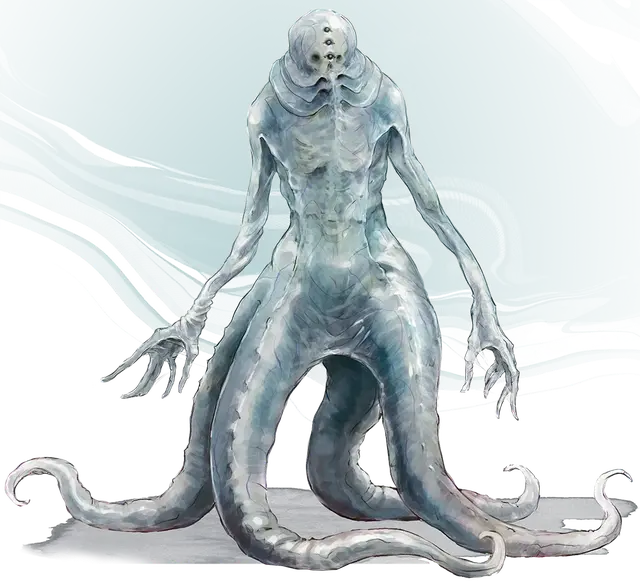

Скам
Skum
Средняя Аберрация, законно-злая

Класс Доспеха 14 (природный доспех)
Хиты 93 (11к8 + 44)
Скорость 20 футов, плавая 40 футов
| мод | спас | ||
|---|---|---|---|
| СИЛ | 19 | +4 | +4 |
| ЛОВ | 11 | +0 | +0 |
| ТЕЛ | 18 | +4 | +4 |
| мод | спас | ||
|---|---|---|---|
| ИНТ | 7 | −2 | −2 |
| МДР | 12 | +1 | +1 |
| ХАР | 9 | −1 | −1 |
Навыки Восприятие +4
Сопротивление урону психическая энергия
Чувства тёмное зрение 120 футов, пассивное Восприятие 14
Языки Общий, Глубинная речь, Телепатия 60 фт.
Опасность 5 (1800 опыта)
Бонус мастерства +3
Особенности
Амфибия. Скам может дышать и воздухом и под водой.
Вассал аболета. Скам постоянно очарован своим хозяином аболетом [aboleth].
Психическая подготовка. Скам невосприимчив к состояниям испуганный и очарованный, если только они не вызваны эффектами, созданными аболетом.
Зависимость от воды. Скам получает 6 (1к12) урона кислотой за каждые 10 минут, которые он проводит без воздействия воды.
Действия
Мультиатака. Скам совершает три атаки: две Трезубцем и одну Разрушающем разум прикосновением.
Трезубец. . Рукопашная атака оружием: +7 к попаданию, досягаемость 5 футов, одна цель. Попадание: 7 (1к6 + 4) колющего урона.
Разрушающее разум прикосновение. Рукопашная атака оружием: +7 к попаданию, досягаемость 5 футов, одна цель. Попадание: 18 (4к8) урона психической энергией, и цель получает помеху на спасброски Мудрости, совершаемые до конца следующего хода скама.
Описание
Несколько бедолаг в окрестностях Стайза поддались магии аболета из-за его болезнетворного прикосновения. Превращенные в существ, называемых скамами, они едва напоминают свои прошлые формы, их кожа становится скользкой и полупрозрачной, а конечности деформируются, напоминая конечности глубоководных чудищ. Эти изменение делают их зависимыми от воды, в которую они должны регулярно погружаться, чтобы не испытывать болезненных и потенциально смертельных кожных язв. Скамы привязаны к своему хозяину аболету не только своим проклятым состоянием, но и психической связью, которая заставляет их выполнять все его зловещие желания.